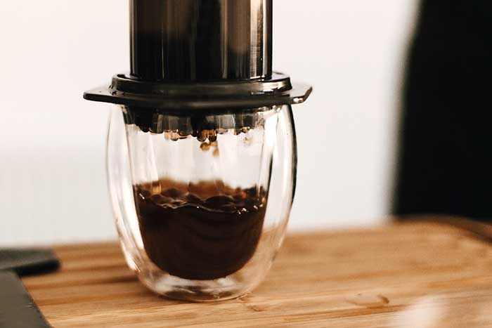

AeroPress Espresso

Description
James Hoffmann won the 2007 World Barista Championship and founded Square Mile Coffee Roasters. This is his method for mimicking an espresso using the AeroPress.
What you need
- Inverted AeroPress
- 18g dark roast, fine ground coffee
- 90g water 100C
Steps
- Place a paper filter in the cap and rinse with hot water.
- Add 18 g of ground coffee to the brew chamber. It should be ground fairly fine (a bit coarser than an espresso grind).
- Pour 90 g of hot water over the grounds.
- Stir to remove any clumps, a little bit aggressively.
- Fasten the filter cap and let sit.
- Flip the AeroPress and press gently into a cup. Keep pressing all the way through the hissing.
Back to main page